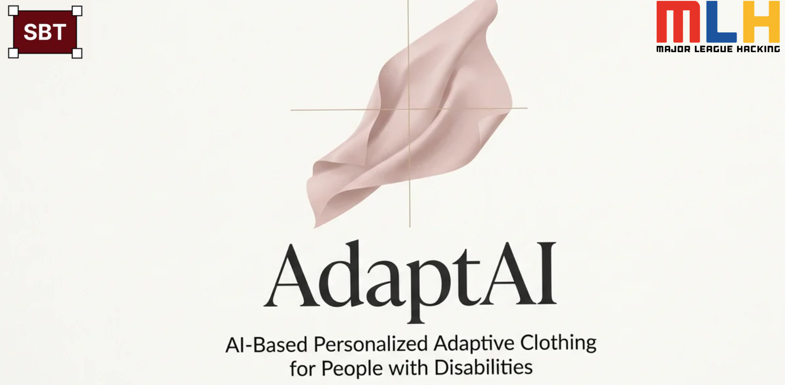

AdaptAI
AI-powered adaptive fashion platform that turns a person's body, mobility, sensory, and style needs into personalized clothing concepts that local tailors can realistically produce.
Long Story Short
I reframed adaptive clothing as a dignity, independence, and supply-chain problem
AdaptAI began with a simple belief: clothing should adapt to the person instead of forcing the person to adapt to standard clothing. I shaped the product around people with disabilities who face daily dressing barriers caused by tight openings, high-dexterity closures, rigid fabrics, sensory discomfort, seated mobility needs, and limited access to stylish adaptive wear.
Human Need
Centered dressing as a daily confidence and independence challenge, not a cosmetic preference problem.
AI Translation
Mapped body, mobility, sensory, and style inputs into adaptive clothing requirements and visual concepts.
Local Production
Connected tailor-ready specifications to a decentralized network of local sewists and small businesses.
How might we help people with disabilities turn physical, functional, and personal clothing needs into garments that support dignity, independence, comfort, and style?
Problem Framing
The silent daily challenge of dressing revealed a product gap hiding in plain sight
Through the AdaptAI concept, I focused on the overlooked friction of getting dressed when standard apparel assumes standing mobility, standard body proportions, easy arm movement, and the ability to manage buttons, zippers, and restrictive openings. The problem was not just finding clothes. It was finding clothing that made people feel comfortable, independent, dignified, and confident.

Research Insight
Standard fashion assumptions break down when bodies, mobility, and dexterity needs differ
Mainstream clothing often assumes standard body proportions, high-dexterity closures, rigid materials, and standing mobility. For many disabled users, those assumptions translate into tight openings, difficult fasteners, uncomfortable friction, limited seated fit, and dependence on caregiver assistance for basic dressing tasks.

Product Inputs
I defined three input categories that made personalization specific enough to be useful
AdaptAI combines physical fit data with lived-experience information. Instead of treating personalization as a style quiz, the concept captures body measurements and posture, disability and mobility needs, and comfort and style choices. That combination lets the system recommend adaptive features without erasing personal taste.

Market Gap
The adaptive clothing landscape creates tradeoffs users should not have to make
Current adaptive wear can be limited, expensive, difficult to source, low in personalization, and overly clinical in appearance. I positioned AdaptAI around the opposite vision: user-driven variety, accessible cost, bespoke personalization, direct access, and equal priority on style and function.

Solution
I designed the system as a translation engine from human constraint to tailored freedom
The AI workflow collects user input, interprets body shape and posture, parses comfort and style preferences, then maps needs to adaptive features such as magnetic buttons, Velcro closures, side openings, seated-fit designs, soft fabrics, and elastic waistbands. The output is not just a pretty outfit image; it is a structured concept that explains what features should be built into the garment and why.

System Workflow
I scoped the MVP around credible AI support instead of overpromising full automation
The realistic MVP translates user needs into adaptive design requirements, generates a structured image prompt or tailor-facing specification, and produces a visual concept users can react to. The broader architecture can combine pose and body input, VLM-based preference parsing, fit prediction, adaptive feature mapping, generative visuals, and local tailor production.

Prototype Direction
The output screens show the product moving from user context to actionable clothing concepts
The prototype direction included a user summary, outfit design explanation, adaptive feature recommendations, reasoning for why the design works, an image prompt, and visual variations. I wanted the experience to feel empowering: the adaptive features should be integrated into the design, not become the entire visual identity.

Operations Model
I connected the product concept to a decentralized supply chain and circular resale model
AdaptAI also works as an operations model: users receive better-fitting adaptive designs, local tailors receive clearer specifications and new demand, and garments can later be resold or donated through profile-matched listings. This reframes accessibility as both a product design challenge and a socially responsible supply-chain opportunity.

Impact
1st Place
Recognized as the winning hackathon concept for a disability-centered AI fashion platform.
Inclusive AI
Translated mobility, sensory, body, and style needs into adaptive clothing recommendations.
Operational Impact
Designed a model that could reduce dressing assistance time while creating new income for local tailors.
Reflection
What I learned
AdaptAI taught me to treat accessibility as a systems problem. The strongest product decision was not to promise a fully automated manufacturing platform immediately, but to build a credible bridge: from user needs, to explainable adaptive requirements, to visual concepts, to local production. That made the idea more human, more useful, and more realistic.